導入当日〜日常運用を、画面つきで説明します。
できること：伝票発行・印刷／履歴・訂正再発行／客先・品目マスタ／台帳連動（ロット）／請求明細書・一覧／クラウド保存
含まれないもの（別相談）：見積書・領収書、大規模レイアウト変更（いずれも別途相談）
Firebaseとは：Googleのインターネット上のデータ置き場。客先・品目・履歴をここに保存し、別PCでも同じデータを使える。普段はアプリだけでよく、管理画面は不要。
データの置き場所：導入当初は提供者側のFirebase（御社の登録不要・URL＋ログインで利用可）。後日、御社のFirebaseへ移管可（時期・費用は都度相談）。保険としてデータタブのJSONバックアップを定期保存。
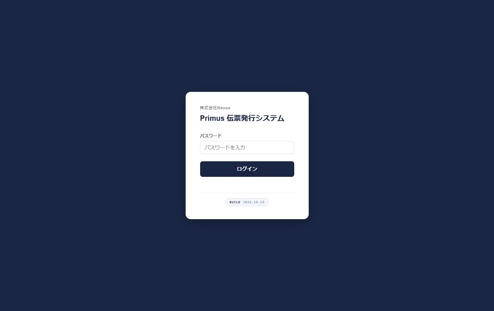
| パスワード | 利用者ごとのログイン用 |
|---|---|
| ログイン | 押すとアプリが開く |
手順：URLを開く → パスワード入力 → ログイン
初期パスワード：デフォルトで登録されているユーザーのパスワードは admin1234 です。導入後は、必要に応じてユーザー管理から変更してください。
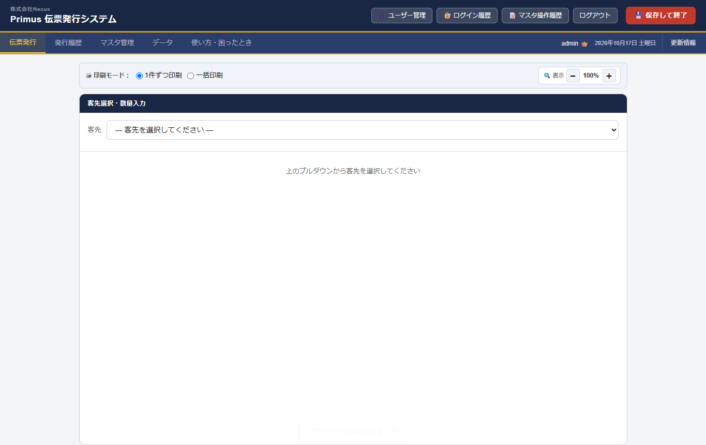
| 印刷モード | 1件ずつ／一括 |
|---|---|
| 客先プルダウン | ここから開始 |
| 表示± | 画面の拡大縮小（印刷サイズとは別） |
| タブ右端 | ログイン名 → 日付 → 更新情報 |
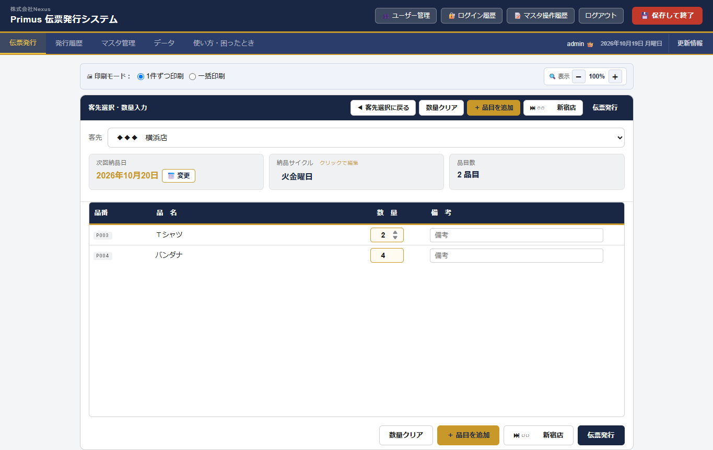
| 客先 | 選んだ届け先 |
|---|---|
| 次回納品日 | サイクルから自動。「変更」で指定可 |
| 納品サイクル | 納品曜日。クリックで編集可 |
| ロット番号 | 荷造り照合用（1〜10）。台帳から受け取ることも可 |
| 品番／品名 | マスタから出る一覧 |
| 数量 | 本日の出荷数を入力 |
| 備考 | 任意メモ |
| ＋品目を追加 | 今日だけの追加品目 |
| 伝票発行 | 履歴保存 → 完了画面へ |
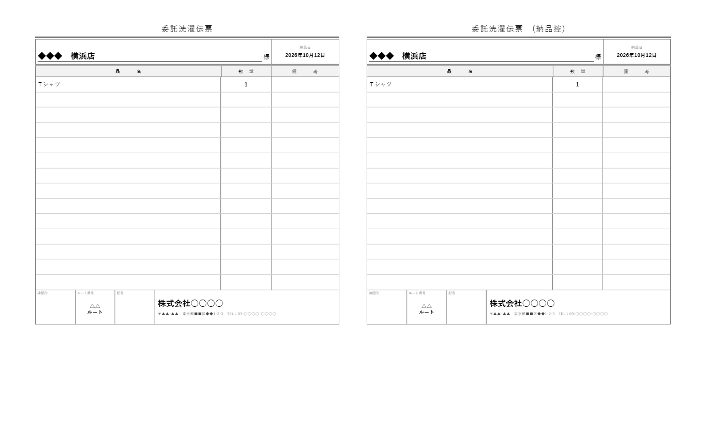
印刷の目安（右側の設定） 用紙：B5 ／ 余白：なし ／ 倍率：100%（小さく出るとき）
※アプリ内に紙面プレビュー専用画面はありません。伝票の見た目はこの印刷画面で確認します。
同じ客先 × 同じ納品日 の伝票が履歴に既にあるとき、発行ボタンを押すと確認が2回出ます。
1回目（おすすめ）「訂正して再発行しますか？」
2回目「同じ納品日で、新しい伝票として発行しますか？」
基本は訂正再発行。どうしても同じ納品日で別伝票が必要なときだけ、2回目で新規発行を選んでください。
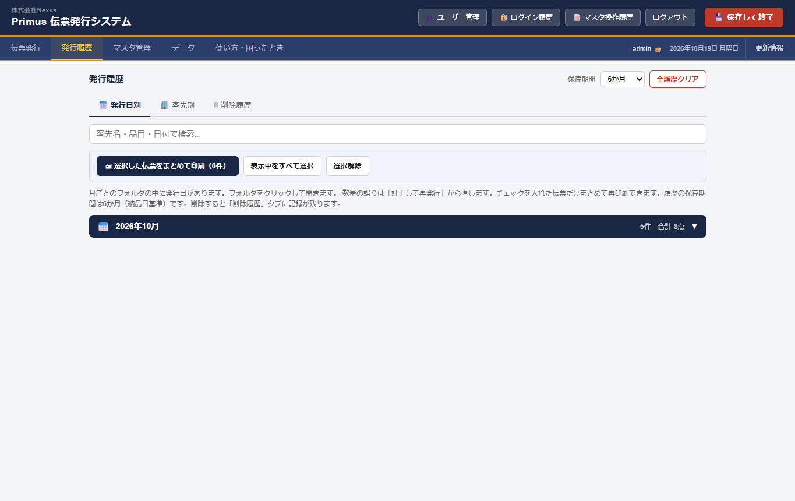
| 発行日別／客先別／ロット別／削除履歴 | 見方の切り替え |
|---|---|
| 検索 | 客先・品目・日付・ロットで絞り込み |
| 保存期間 | 3／6／12か月 |
| フォルダ | 月→日付。クリックで開く |
| チェック／ロットまとめて印刷 | 選んだ伝票、または同じロットをまとめて再印刷 |
| 訂正して再発行 | 数量ミスなどを直して同じ履歴を更新 |
同じブラウザで開くと受け渡しがスムーズです。
上部タブ請求から、請求明細書・請求額一覧の確認・印刷・Excel出力ができます。
| 請求月 | 年・月を指定 |
|---|---|
| 請求明細書を見る | 客先ごとの明細を画面で確認・印刷 |
| 請求額一覧を見る | 一覧表を確認・CSV／Excel |
| 未反映分を見る | まだ請求Excelに出していない伝票 |
※締め日・単価などはデータタブの「請求系マスタ項目」をONにしてからマスタで設定（初期OFF）。
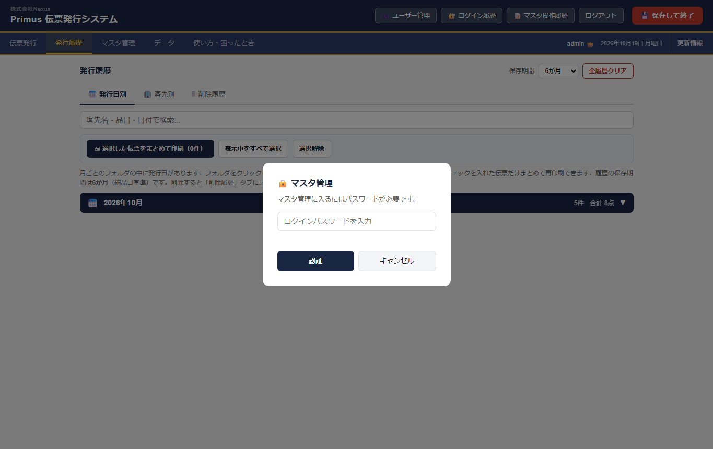
ログインと同じパスワードを入れ、認証を押します。
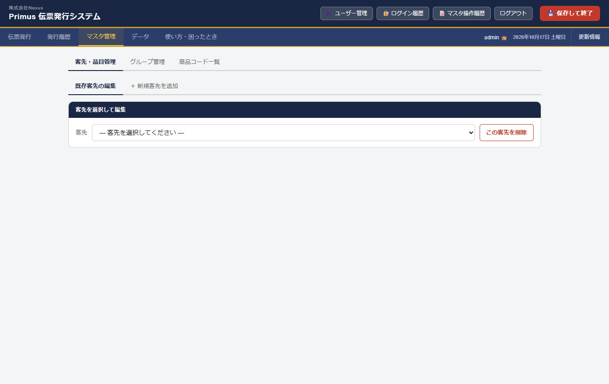
| 客先・品目管理 | 普段いちばん使う |
|---|---|
| グループ管理 | ルートなどのまとめ |
| 商品コード一覧 | 品目マスタ全体 |
| 既存客先の編集 | いまある客先を直す |
| ＋新規客先を追加 | 新しい届け先を作る |
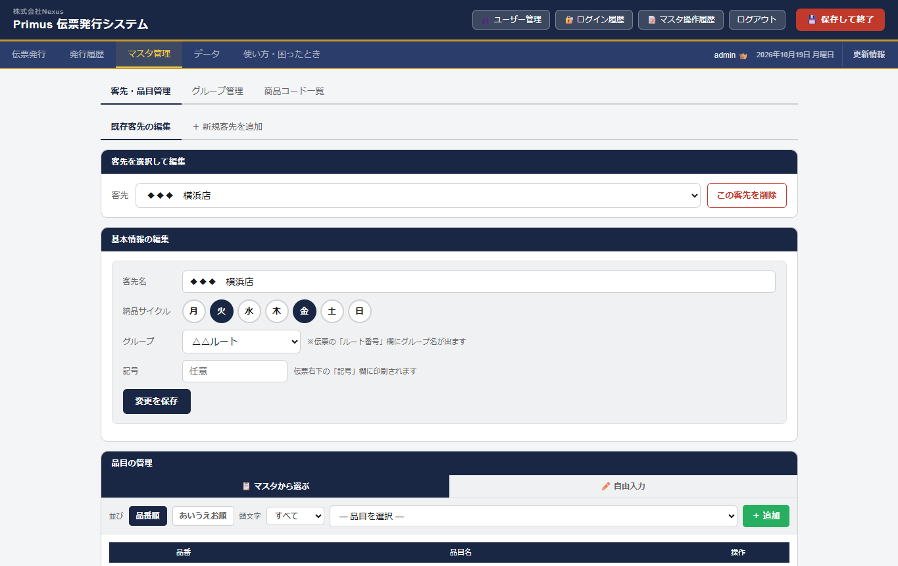
| 客先名 | 届け先の表示名 |
|---|---|
| 納品サイクル | 月〜日の丸。納品曜日をON |
| グループ | 伝票の「ルート番号」欄にグループ名が出る |
| 記号 | 伝票の「記号」欄に印刷（任意） |
| 変更を保存 | 押さないと基本情報は反映されない |
※締め日・配送費などは「請求系マスタ項目」がONのときだけ表示。伝票だけならOFFのままでOK。
※伝票右下の会社名・住所・TEL／FAX／メール／ホームページは データ タブの「伝票フッターの会社名」で変更します。
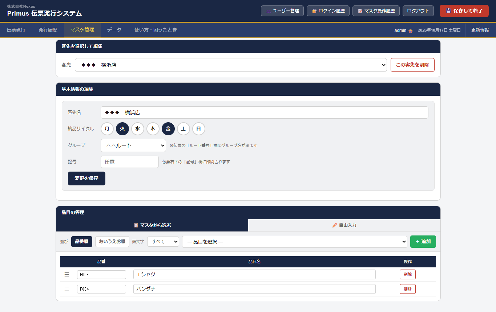
| マスタから選ぶ | 商品コード一覧から追加 |
|---|---|
| 自由入力 | その場で品名を追加 |
| 並び | 品番順／あいうえお順 |
| 頭文字 | あ・か・さ…／A・B・C… で絞り込み（漢字も読みで判定。例: 和帽子→わ） |
| 一覧 | この客先の伝票に出る品目 |
| 削除／≡ | 外す／ドラッグで順番変更 |
ポイント：ここに登録した品目が、伝票発行の数量入力表に出ます。
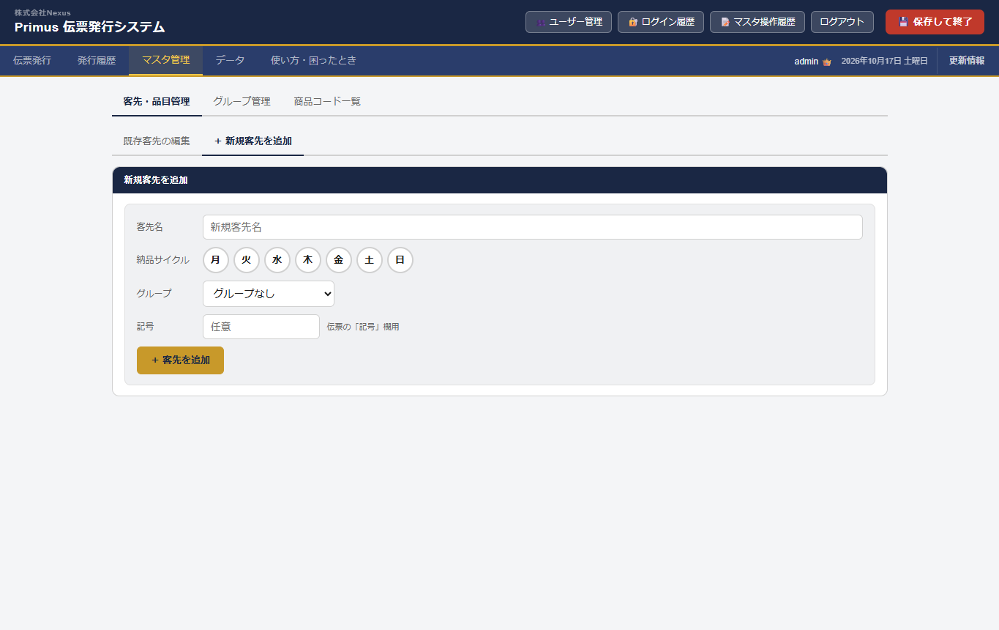
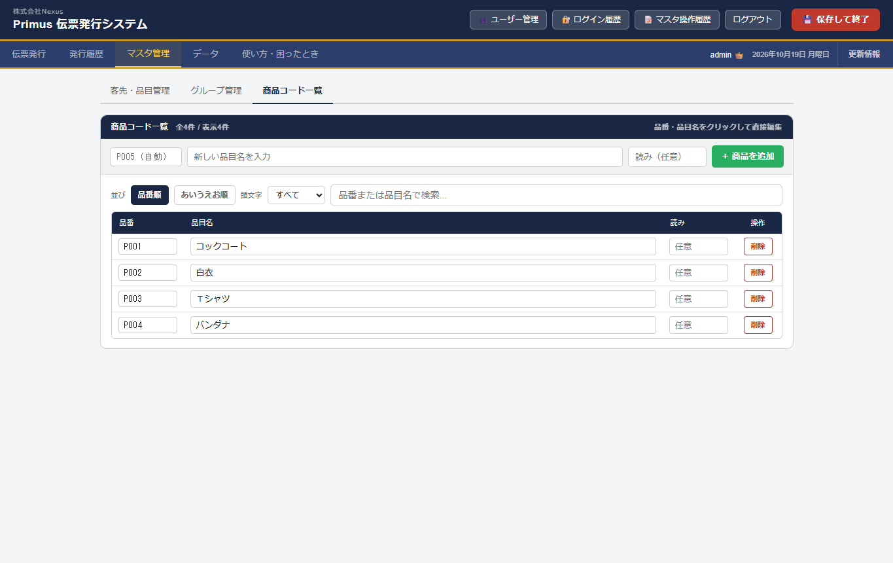
全社共通の品目マスタ。「マスタから選ぶ」の元データです。
| 新しい品目名 → ＋商品を追加 | 品目名だけ入れればOK。品番は自動（P001, P002…） |
|---|---|
| 読み（任意） | 頭文字絞り込み用。合わないときだけひらがな等を入れる |
| 品番欄 | 空のままで大丈夫。通常は自動で十分 |
| 並び／頭文字 | 品番順・あいうえお順と、頭文字プルダウンで絞れる |
| 一覧の品番・品目名・読み | クリックしてその場で編集できる |
注意：すでに登録済みの品目（完全同名）を登録しようとすると、警告が出て追加できません。同じ名前を二重に増やさないための仕組みです。
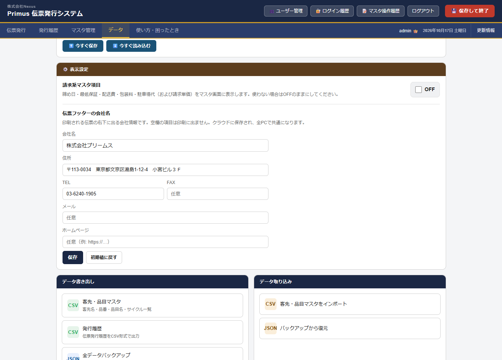
| 今すぐ保存／読み込む | 手動クラウド同期 |
|---|---|
| 請求系マスタ項目 | 初期はOFF推奨 |
| 伝票フッターの会社名 | 会社名・住所・TEL／FAX／メール／ホームページ（空欄は印刷に出ない） |
| JSONバックアップ | 緊急用の全データ退避（週1おすすめ）。後日のクラウド移管・復旧にも使える |
| 消えた客先を復元 | 履歴にあるのにマスタに無い客先を戻す |
ユーザーの追加・削除は 管理者だけ ができます。
| 管理者 | 一般ユーザー | |
|---|---|---|
| 伝票発行・履歴・印刷・マスタ・データ | ○ | ○ |
| ユーザー管理ボタン | ○（表示される） | ×（出ない） |
| ユーザー追加・削除／管理者パス変更 | ○ | × |
| 名前の表示 | 名前＋👑 | 名前のみ |
※ログイン用パスワードと、ユーザー管理に入る 管理者パスワード は別物です。
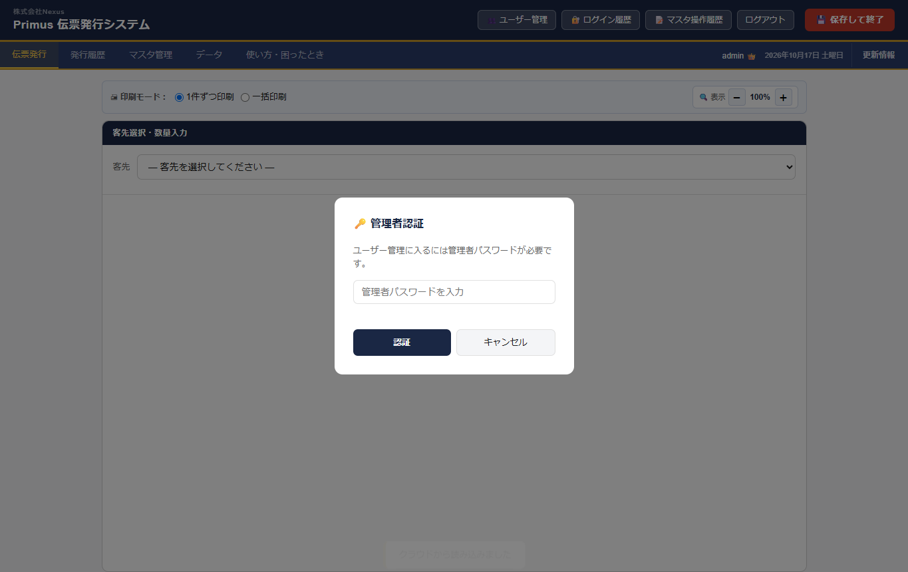
管理者でログイン → ユーザー管理 → 管理者パスワードで認証。
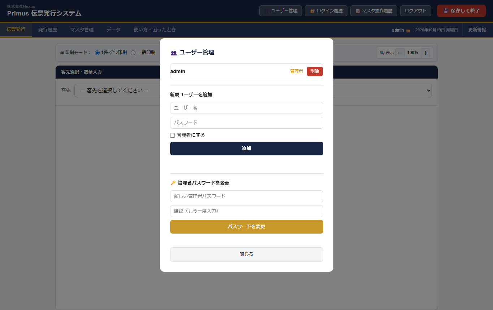
| ユーザー一覧 | 管理者／一般の表示、削除 |
|---|---|
| 新規追加 | ユーザー名・パスワード。「管理者にする」にチェックで管理者 |
| 管理者パスワード変更 | ユーザー管理に入るためのパスワード |
おすすめ：責任者＝管理者1名。現場は一般で作る。管理者パスワードはむやみに共有しない。
ヘッダーのログイン履歴で、誰がいつ入ったかも確認できます。
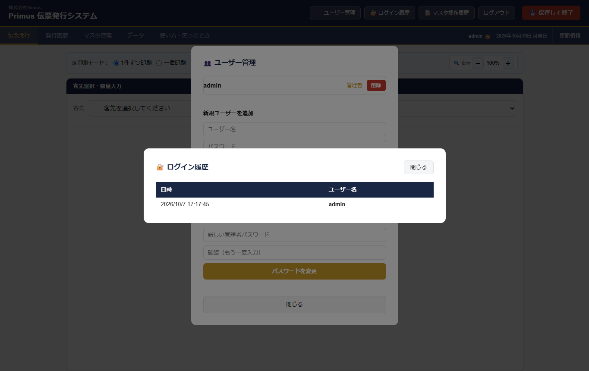
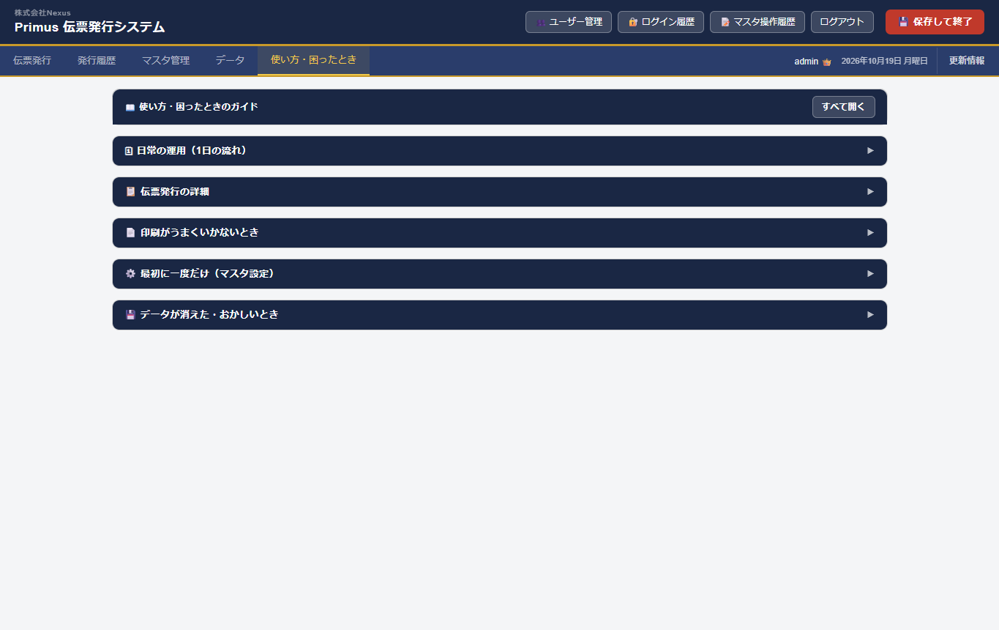
迷ったらアプリ内のここを開きます。各見出しは最初は閉じています。知りたいところだけ開いてください（「すべて開く」もあります）。
| 小さく出る | 倍率100% |
|---|---|
| 余白が大きい | 余白なし／最小 |
| 用紙が違う | B5・横向き |
| ルート番号が出ない／違う | 客先のグループを確認（未設定なら空欄） |
| 記号が出ない／違う | 客先マスタの記号欄を確認 |
| 会社名・TELなどが違う | データ →「伝票フッターの会社名」で保存（空欄は印刷に出ない） |
期間中OK：操作質問／不具合／軽い運用相談
別見積：大きな機能追加／レイアウト大幅変更／見積・領収
連絡先：株式会社プゥル・ヴー 担当 善方 TEL 046-267-9228 mobile 090-2906-8227
| URL・ログイン | □ | 管理者／一般の違い | □ |
| ユーザー追加 | □ | 伝票入力 | □ |
| マスタ登録 | □ | テスト発行・印刷 | □ |
| 同一納品日ロック | □ | ガイド受領 | □ |
日付： 年 月 日 ／ 利用者： 提供者：